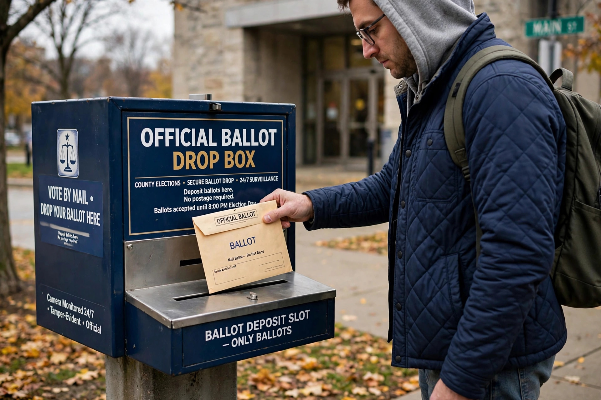

Voting by mail in the United States is the process by which registered voters receive a ballot at home, mark it, and return it by post or in person to election officials. It is a form of absentee voting. Rules are set by the states and vary widely: some states mail a ballot to every registered voter, others require an application, and a minority still require a specific excuse for voting away from the polling place.
Mail voting has its origins in arrangements for soldiers during the Civil War. Through the 20th century it remained a limited exception for voters who would be away on election day. Oregon became the pioneer of all-mail elections: after experiments in local contests, voters approved a 1998 ballot measure making vote-by-mail the standard for all elections, first used statewide in the 2000 presidential election. Washington, Colorado, Utah, Hawaii, California, Nevada and Vermont have since adopted systems in which ballots are automatically mailed to most registered voters, while Montana and others conduct many local elections by mail.
Ballots are typically mailed several weeks before election day. The voter marks the ballot, seals it in a secrecy sleeve and a signed return envelope, and mails it or deposits it in an official drop box. Common safeguards include bar-coded envelopes tracked to individual voters, signature verification against the voter's registration record, ballot tracking notifications, and criminal penalties for fraud. States differ on whether ballots must be received by election day or merely postmarked by it, and on whether voters may correct ("cure") defects such as a missing signature.
During the COVID-19 pandemic, mail voting expanded dramatically: more than 40 per cent of votes in the 2020 general election were cast by mail. The method became the subject of intense political controversy, including unfounded claims of widespread fraud; post-election audits, recounts and academic studies found fraud to be extremely rare, though isolated cases and administrative errors occurred. Several states subsequently tightened or loosened their mail-voting rules along partisan lines.
Studies of states that adopted all-mail elections find modest increases in turnout, particularly in low-profile local elections, without systematically advantaging either major party. Research also finds that mail ballots are rejected at higher rates than in-person votes, mainly for late arrival and signature problems, and that first-time mail voters are rejected most often — a pattern mitigated by notice-and-cure procedures.